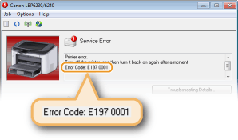

When an Error Message Appears
An error message appears in the Printer Status Window when there is a problem with print processing, when the machine cannot communicate, or when some other problem prevents normal operation. See the following list for more information about error messages.
Cannot Communicate with Printer
Bidirectional communication is not enabled.
Enable bidirectional communication, and restart the computer.
Checking Bidirectional Communication
Checking Bidirectional Communication
In a terminal connection environment, the machine is redirected and a setting problem prevents communication.
If the machine has been redirected in a terminal connection environment, such as a remote desktop application or XenAPP (MetaFrame), there may be a problem with firewall or other settings that prevents communication with the machine. Check the communication settings of the server and client. For details, contact your network administrator.
Cannot Communicate with Server
Your computer is not connected to the print server.
Make the proper connection between your computer and the print server.
The print server is not running.
Start the print server.
The machine is not shared.
Make the proper printer sharing settings.
Printer Driver Installation Guide
Printer Driver Installation Guide
You lack user rights to connect to the print server.
Ask the administrator of the print server to change your user rights.
[Network discovery] is not enabled. (Windows Vista/7/8/Server 2008/Server 2012)
Enable [Network discovery].
Enabling [Network discovery]
Enabling [Network discovery]
Check Paper
The paper size that was set in the printer driver is different from the paper size of the last print job.
When you try printing with the machine after changing the paper size setting, this message is displayed to prompt you to check the paper size. Check the size of the paper that is loaded in the multi-purpose tray or manual feed slot.
When the paper size specified in the printer driver matches, or when you want to print using the currently loaded paper
Without loading new paper, press the  (Paper) key, or click
(Paper) key, or click  in the Printer Status Window.
in the Printer Status Window.
(Paper) key, or click in the Printer Status Window. When the paper size specified in the printer driver does not match
Load paper of the specified size, and press the (Paper) key on the machine.
Loading Paper in the Multi-Purpose Tray
Loading Paper in the Manual Feed Slot
(Paper) key on the machine. Loading Paper in the Multi-Purpose Tray
Loading Paper in the Manual Feed Slot
Check Printed Output
The paper size specified in the printer driver is different from the size of the paper actually loaded.
Load paper of the specified size, and press the (Paper) key on the machine.
Loading Paper in the Multi-Purpose Tray
Loading Paper in the Manual Feed Slot
(Paper) key on the machine. Loading Paper in the Multi-Purpose Tray
Loading Paper in the Manual Feed Slot
The job may not be printed normally.
If you are doing 1-sided printing, you can click to continue printing. If you continue printing and the results are not satisfactory, print the job again.
to continue printing. If you continue printing and the results are not satisfactory, print the job again. If you are doing 2-sided printing, stop printing, and then print the job again.
Canceling Print Jobs
Canceling Print Jobs
Check Printer
The toner cartridge is not set.
Set the toner cartridge correctly.
How to Replace Toner Cartridges
How to Replace Toner Cartridges
There is paper from a paper jam left inside the machine.
Thoroughly check for fragments of paper that may be left inside the machine. If you find any, remove them. If the paper is difficult to remove, do not try to forcibly pull it out of the machine. Follow the instructions in the manual to remove paper.
Clearing Paper Jams
Clearing Paper Jams
Communication Error
The machine is not connected with a USB cable.
Connect the machine to your computer using a USB cable.
Printer Driver Installation Guide
Printer Driver Installation Guide
The machine is not turned ON.
The  (Power) indicator does not light if the machine is not turned ON. Turn it ON. If the machine does not respond when you press the power switch, check to make sure that the power cord is connected correctly and then try again to turn the power ON.
(Power) indicator does not light if the machine is not turned ON. Turn it ON. If the machine does not respond when you press the power switch, check to make sure that the power cord is connected correctly and then try again to turn the power ON.
Turning the Power ON
(Power) indicator does not light if the machine is not turned ON. Turn it ON. If the machine does not respond when you press the power switch, check to make sure that the power cord is connected correctly and then try again to turn the power ON. Turning the Power ON
Incompatible Printer
A printer other than this machine is connected.
Make the proper connection between your computer and the machine.
Connecting to a Wired LAN
Connecting to a Wireless LAN
Connecting to a Wired LAN
Connecting to a Wireless LAN
 |
|
If you are not sure on how to make a USB connection, see Printer Driver Installation Guide.
|
Incorrect Port
The machine is connected to an unsupported port.
Check the port.
Checking the Printer Port
Checking the Printer Port
|
|
If the port you need is not availableIf you are using a network connection, configure the port. Configuring Printer Ports
If you are using a USB connection, reinstall the printer driver. Printer Driver Installation Guide
|
Insufficient Printer Memory
The document being printed contains a page with a very large amount of data.
This machine cannot print the data. Click  to cancel the print job.
to cancel the print job.
to cancel the print job. Network Communication Error
The machine is not connected via the network.
Make the proper network connection between your computer and the machine.
Connecting to a Wired LAN
Connecting to a Wireless LAN
Connecting to a Wired LAN
Connecting to a Wireless LAN
The machine is not turned ON.
The (Power) indicator does not light if the machine is not turned ON. Turn it ON. If the machine does not respond when you press the power switch, check to make sure that the power cord is connected correctly and then try again to turn the power ON.
Turning the Power ON
(Power) indicator does not light if the machine is not turned ON. Turn it ON. If the machine does not respond when you press the power switch, check to make sure that the power cord is connected correctly and then try again to turn the power ON. Turning the Power ON
Communication is restricted by a firewall.
Ask the system manager of the machine about the problem.
Restricting Communication by Using Firewalls
Restricting Communication by Using Firewalls
If the machine cannot be accessed because of incorrect settings, use the reset button to initialize the system management settings.
Initializing by Using the Reset Button
Initializing by Using the Reset Button
Out of Paper or Paper Could Not be Fed
There is no paper in the multi-purpose tray or manual feed slot. Or the paper could not be fed.
Set the paper correctly, and then press the (Paper) key on the machine.
Loading Paper in the Multi-Purpose Tray
Loading Paper in the Manual Feed Slot
(Paper) key on the machine. Loading Paper in the Multi-Purpose Tray
Loading Paper in the Manual Feed Slot
Paper Jam inside Printer
There is a paper jam inside the machine.
Do not try to forcibly pull jammed paper out of the machine. Follow the instructions in the manual to remove paper.
Clearing Paper Jams
Clearing Paper Jams
Service Error
An error has occurred inside the machine.
Turn OFF the machine, wait for at least 10 seconds, and turn it back ON. If the message does not reappear, you can continue using the machine.
If the same message reappears after you turn the power back ON, turn the power OFF, unplug the power plug from the AC power outlet and contact your local authorized Canon dealer. Make a note of the error code that is displayed, and have it ready when you contact your local authorized Canon dealer.

Top Cover Open
The top cover is not completely shut.
Shut the top cover firmly.

|
|
|
If the top cover will not close completely, check to make sure that the toner cartridge has been pushed all the way in.
|